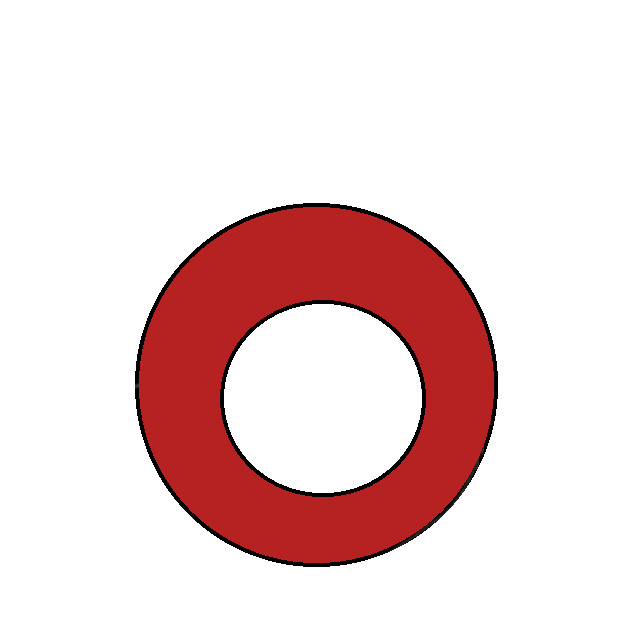

<div>
<head>
<style>
          body {
		      transition: filter 0.7s, background-color 0.7s, background-image 0.7s;
			  background:white url(https://reuter.on.ca/wp-content/uploads/2015/10/white-seamless-background-free-vector-145.jpg)
          }
		  iframe {
			  transition: filter 0.7s;
		  }
          * {
		      font-family: Arial, Helvetica, sans-serif;
		  }
          #main {
              margin: auto;
              top: 100%;
              width: 50.000em;
              border-radius: 12px;
              transition: filter 0.7s, background-image 0.7s;
			  background-color: #e1e4ea;
          }
</style>
</head>
</div>
<h1>These are my gifs.</h1>
<br>
<br>
<br>
<br>
<body onkeydown="{

     let myKey = event.key


 //  let myKey = String.toLowerCase(event.key)


    if (event.key == 'ArrowUp'){
        document.getElementById('MyPat01').style.top = parseInt(document.getElementById('MyPat01').style.top) - 10
    }
    if (event.key == 'ArrowLeft'){
        document.getElementById('MyPat01').style.left = parseInt(document.getElementById('MyPat01').style.left) - 10
    }
    if (event.key == 'ArrowDown'){
        document.getElementById('MyPat01').style.top = parseInt(document.getElementById('MyPat01').style.top) + 10
    }
    if (event.key == 'ArrowRight'){
        document.getElementById('MyPat01').style.left = parseInt(document.getElementById('MyPat01').style.left) + 10
    }


}">